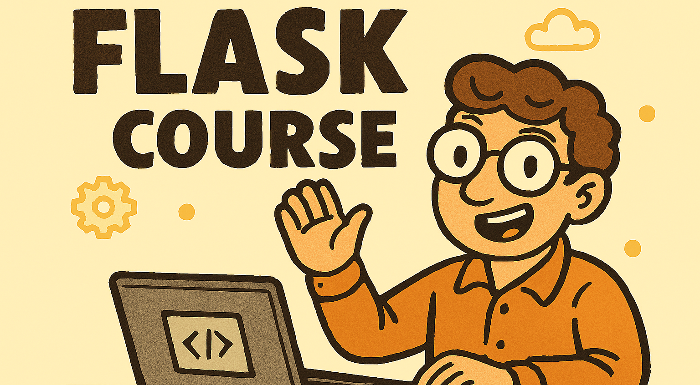

Flask
Master Flask Web Development in Python using Free Tools & Real-World Projects — Perfect for Beginners
This course is designed for absolute beginners with no prior experience in Flask, web development, or backend frameworks. We’ve carefully crafted each module to walk you through the fundamentals of Flask architecture, routing, templates, and database integration—ensuring you build a strong foundation from the ground up.
Using free tools like VS Code, SQLite, and Bootstrap, you’ll learn to build dynamic web applications step-by-step. By the end of the course, you’ll complete a capstone project that showcases everything you've learned—from handling user input to deploying your app online.
Whether you're a Python enthusiast or someone curious about web development, this course will help you confidently master Flask and start building production-ready web apps.
Instructor

Mohd Sajjad
Sajjad is a seasoned Python developer with over 6 years of industry experience, specializing in Flask-based web development. He has taught numerous programming courses, guiding beginners and professionals alike through the intricacies of Python and backend frameworks. His passion lies in helping students build real-world applications and achieve their learning goals with clarity and confidence.
Course Overview
This course is designed for software engineers who want to build robust web applications and backend services using the Flask framework in Python. It is also ideal for full-stack developers and backend engineers responsible for designing and implementing scalable, data-driven web architectures. Additionally, technical managers and solution architects who may not directly code in Flask but collaborate with development teams will benefit from understanding the framework’s capabilities and design principles.
This course uses the latest stable version of Flask. All source code and examples have been thoroughly tested in a local development environment using free tools such as VS Code, SQLite, and Bootstrap, ensuring a smooth and practical learning experience.
This course include:
Interactive Learning
100% Satisfaction
20+ Topics
Mobile friendly
Assignments
Python Code
24/7 Support
What you'll learn
Web Basics
Flask Architecture
Routing Logic
Template Engine
DB Setup
Deployment Skills
Capstone Project